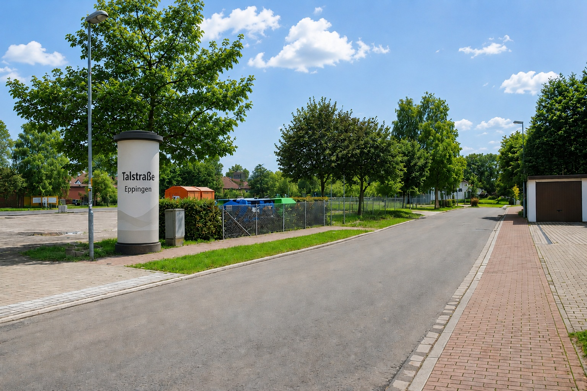

Gemeinsam für mehr Lebensqualität in Eppingen. Für weniger Lärm, mehr Sicherheit und einen konstruktiven Dialog.
Jetzt unterstützenWir setzen uns für eine lebenswertere Talstraße in Eppingen ein. Unser Ziel ist es, die Auswirkungen des Durchgangsverkehrs auf die Anwohnerinnen und Anwohner sichtbar zu machen und gemeinsam konstruktive Lösungen anzustoßen.
Im Mittelpunkt stehen mehr Sicherheit, weniger Lärm und Erschütterungen sowie ein offener Dialog mit der Stadt und allen Beteiligten.
Regelmäßiger Schwerlast- und landwirtschaftlicher Verkehr belastet die Talstraße nach Wahrnehmung vieler Anwohner.
Vorbeifahrende Fahrzeuge verursachen Geräusche, die den Alltag vieler Anwohner beeinträchtigen.
Immer wieder werden Erschütterungen beim Passieren schwerer Fahrzeuge wahrgenommen.
Eine ruhige und sichere Straße erhöht die Lebensqualität für Fußgänger, Kinder und Radfahrer.
Aktuell registrierte Unterstützer
Jede Unterstützung hilft dabei, das Anliegen sichtbar zu machen.
Viele Anwohner empfinden den Verkehr in der Talstraße als Belastung. Die Initiative möchte diese Erfahrungen sammeln und sich für Verbesserungen einsetzen.
Die Unterstützung ist selbstverständlich kostenlos.
Mehr Sicherheit, weniger Lärm und Erschütterungen sowie ein konstruktiver Dialog mit den zuständigen Stellen.
Hier können künftig Fotos der Talstraße, von Veranstaltungen oder Informationsständen ergänzt werden.

Fragen oder Anregungen können über das Unterstützungsformular übermittelt werden.
Kontakt aufnehmenAngaben gemäß § 5 TMG
Bürgerinitiative „Talstraße – Gemeinsam für mehr Lebensqualität“
Verantwortlich im Sinne des Presserechts:
Vor- und Nachname
Straße und Hausnummer
PLZ Ort
E-Mail: über das Unterstützungsformular dieser Website
Diese Initiative ist ein Zusammenschluss von Anwohnerinnen und Anwohnern der Talstraße in Eppingen. Sie ist keine eingetragene Organisation oder juristische Person.
Verantwortlich ist die im Impressum genannte Person.
Wenn Sie das Unterstützungsformular nutzen, werden die dort eingegebenen Daten (z. B. Name, E-Mail-Adresse oder freiwillige Angaben) verarbeitet.
Die Daten werden ausschließlich zur Dokumentation der Unterstützung der Bürgerinitiative und zur Kontaktaufnahme im Rahmen des Projekts „Talstraße“ verwendet.
Das Unterstützungsformular wird über Google Forms bereitgestellt. Dabei können Daten durch Google verarbeitet werden. Es gelten zusätzlich die Datenschutzbestimmungen von Google.
Die Daten werden nur so lange gespeichert, wie sie für die Zwecke der Initiative erforderlich sind.
Sie haben jederzeit das Recht auf Auskunft, Berichtigung oder Löschung Ihrer gespeicherten Daten.
Initiative | Ziele | Projekt | FAQ | Unterstützen
Gemeinsam für eine lebenswerte Talstraße in Eppingen.